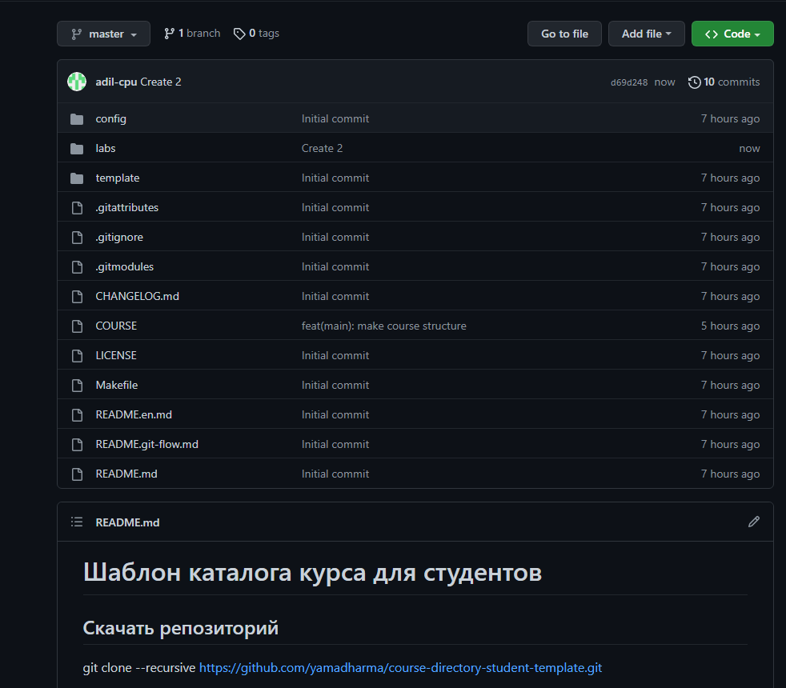
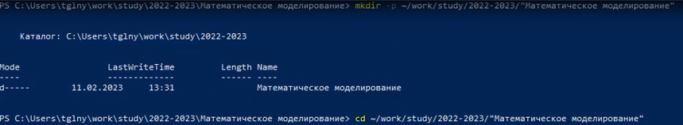
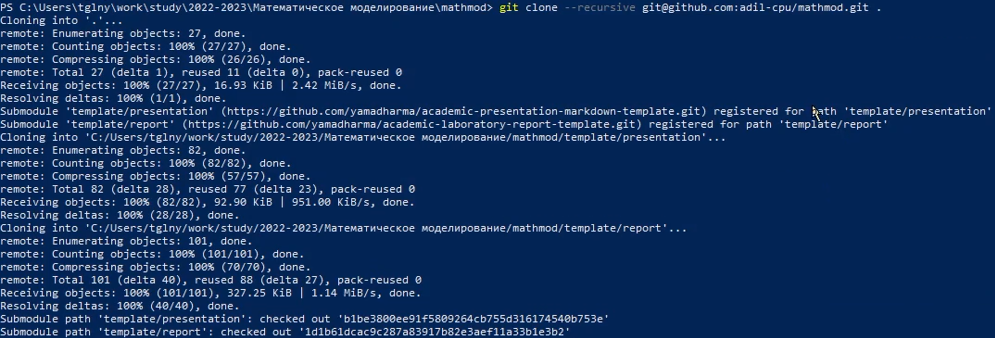
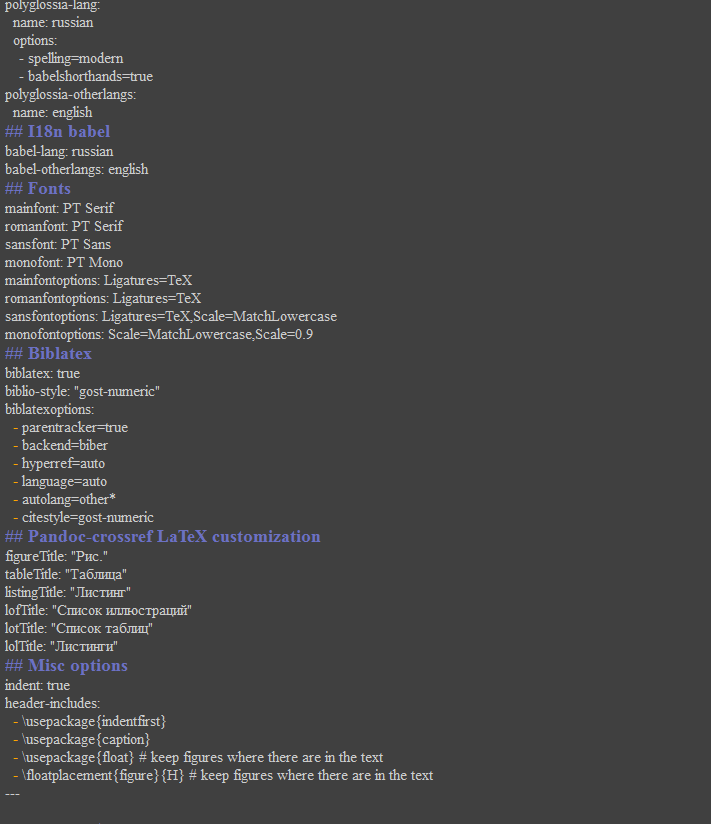

Информация
Докладчик
:::::::::::::: {.columns align=center} ::: {.column width=“70%”}
- Мухамедияр Адиль
- группа НКНбд-01-20
- Факультет физико-математических и естественных наук
- Российский университет дружбы народов
- https://github.com/adil-cpu
Цели и задачи
- Создать шаблон репозитория для выполнения лабораторных работ
- Освежить и дополнить навыки владения git, Markdown, командной
строкой
Материалы и методы
- Процессор
pandoc для входного формата Markdown
- Результирующие форматы
- Автоматизация процесса создания:
Makefile
- Технология git
Выполнение лабораторной
работы
- Для начало мы создали удаленный репозиторий из шаблона

- Дальше мы создаем каталог и клонируем удаленный репозиторий
используя командную строку  
Настройка необходимой
иерархии
- Используя командную строку и команду
make настроили
необходимую иерархию
Написание отчета
- Используя Markdown и vim написали отчет о проделанной работе

Результаты
Настроили все необходимые каталоги и репозитории для успешного
выполнения последующих лабораторных работ.